Demonstrate CubeSat attitude and power dynamics with reaction wheels.
The model includes 3 orthogonal reaction wheels. The satellite is intialized into a polar orbit. The control law keeps the satellite aligned with the magnetic field, which results in flips at the poles. Saves the output file BudgetData.mat
------------------------------------------------------------------------- See also PIDMIMO, QForm, QTForm, CreateLatexTable, LatexScientificNotation, SaveStructure, Plot2D, TimeLabl, Dot, RK4, Unit, Date2JD, InertiaCubeSat, RHSCubeSat, BDipole, PID3Axis -------------------------------------------------------------------------
Contents
- Constants
- Simulation parameters
- CubeSat model
- Initial state vector for a circular orbit
- Start Julian date
- Design the PID Controller
- Atmosphere model data
- Initialize the plotting array to save time
- Initialize the time display
- Run the simulation
- Plotting
- Y-axis labels
- Plotting utility
- Create a table of output
- Save data for the budgets
%------------------------------------------------------------------------ % Copyright (c) 2009-2010,2016 Princeton Satellite Systems, Inc. % All rights reserved. %------------------------------------------------------------------------ % Since version 9 (2010). % 2016.1 Add display of solar area with DrawCubeSatSolarAreas. %------------------------------------------------------------------------ clear g; clear u; clear p; clear d;
Constants
%----------- radToDeg = 180/pi; densitySilicon = 2600; densityAl = 2700; % Aluminum densityTungsten = 19300;
Simulation parameters
%-----------------------
days = 0.2;
tEnd = days*86400;
dT = 1;
nSim = ceil(tEnd/dT);
CubeSat model
Initialize data structure
%-------------------------- d = RHSCubeSat; % CubeSats are 1 kg per U %--------------- model = '3U'; [area,nFace,rFace] = CubeSatFaces( model, 1 ); d.mass = 3; % kg d.inertia = InertiaCubeSat( model, d.mass ); % Model data %------------ d.surfData.area = area; d.surfData.nFace = nFace; d.surfData.rFace = rFace; d.surfData.att.type = 'eci'; % Reaction wheel design %----------------------- d.kWheels = 14:16; % indices of wheel states radius = 0.020; thickness = 0.004; % This is 4 mm volRWA = pi*radius^2*thickness; massRWA = volRWA*densityTungsten; % Mass from density x volume d.inertiaRWA = (massRWA/2)*radius^2; % Polar inertia thicknessSolarPanel = 0.004; % Add power system model % Lithium batteries are 360000 J/kg according to % http://en.wikipedia.org/wiki/Lithium-ion_battery, % so size the battery for 100 g = 36000 J = 10 Wh % Solar cell efficieny is 27% to 29.5% according to Emcore, % http://www.emcore.com/solar_photovoltaics/ %--------------------------------------------------------- d.power.solarCellNormal = [1 1 -1 -1 0 0 0 0;0 0 0 0 1 1 -1 -1;0 0 0 0 0 0 0 0]; d.power.solarCellEff = 0.295; d.power.effPowerConversion = 0.9; d.power.solarCellArea = 0.1*0.116*ones(1,8); d.power.consumption = 4; d.power.batteryCapacity = 36000; volSolarPanel = d.power.solarCellArea(1,1)*thicknessSolarPanel; massSolarPanel = volSolarPanel *densitySilicon; DrawCubeSatSolarAreas(d.power);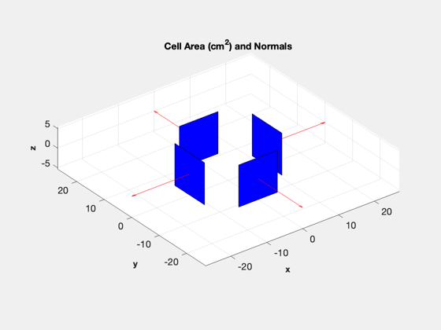
Initial state vector for a circular orbit
%------------------------------------------ x = 6387.165+800; % km v = VOrbit(x); r = [x;0;0]; % Position vector v = [0;0;v]; % Velocity vector - polar orbit q = [1;0;0;0]; % Quaternion w = [0;0;0]; % Angular rate of spacecraft c = [0;0;0]; % Reaction wheel rates b = 2*3600; % Battery state of charge (J = Wh*3600) % State is [position;velocity;quaternion;angular velocity;wheels;battery charge] %------------------------------------------------------------------------- x = [r;v;q;w;c;b];
Start Julian date
%------------------
d.jD0 = Date2JD([2012 4 5 0 0 0]);
Design the PID Controller
Specify the z body axis for alignment with the chosen ECI vector
%-----------------------------------------------------------------
p = PID3Axis;
[p.a, p.b, p.c, p.d] = PIDMIMO( 1, 1, 0.01, 200, 0.1, dT );
p.inertia = d.inertia;
p.max_angle = 0.01;
p.accel_sat = [100;100;100];
p.mode = 1;
p.q_target_last = q;
p.q_desired_state = [0;0;0;1];
p.body_vector = [0;0;1];
Atmosphere model data
Skip the J70 model as it is slow; use the commented out code to switch back if desired. AtmDens2 will be used instead.
d.atm = []; % [aP, f, fHat, fHat400] = SolarFluxPrediction( d.jD0, 'nominal' ); % d.atm.aP = aP(1); % d.atm.f = f(1); % d.atm.fHat = fHat(1); % d.atm.fHat400 = fHat400(1);
Initialize the plotting array to save time
%--------------------------------------------
qECIToBody = x(7:10);
bField = BDipole( x(1:3), d.jD0 );
bField_body = QForm( qECIToBody,bField );
p.eci_vector = Unit(bField);
angleError = acos(Dot(p.eci_vector,QTForm(qECIToBody,p.body_vector)))*radToDeg;
xPlot = [[x;0;0;0;0;angleError;bField_body;0;0;0] zeros(length(x)+11,nSim)];
Initialize the time display
%---------------------------- TimeDisplay( 'initialize', 'CubeSat RWA Sim', nSim );
Run the simulation
%------------------- t = 0; for k = 1:nSim % Display the status message %--------------------------- TimeDisplay('update'); % Quaternion %----------- qECIToBody = x(7:10); % Magnetic field - the magnetometer output is proportional to this %----------------------------------------------------------------- bField = BDipole( x(1:3), d.jD0+t/86400 ); bField_body = QForm( qECIToBody, bField ); % Control system momentum management %----------------------------------- d.dipole = [0.0;0;0]; % Amp-turns m^2 % Reaction wheel control - align with the magnetic field %------------------------------------------------------- p.eci_vector = Unit(bField); angleError = acos(Dot(p.eci_vector,QTForm(qECIToBody,p.body_vector)))*radToDeg; [torque, p] = PID3Axis( qECIToBody, p ); d.tRWA = -torque; % A time step with 4th order Runge-Kutta %--------------------------------------- x = RK4( @RHSCubeSat, x, dT, t, d ); % Get the power %-------------- [xDot, dist, power] = RHSCubeSat( x, t, d ); % Update plotting and time %------------------------- hRWA = x(14:16)*d.inertiaRWA; xPlot(:,k+1) = [x;power;torque;angleError;bField_body;hRWA]; t = t + dT; end TimeDisplay( 'close' );
Plotting
%---------
kP = 1:k+1;
[t, tL] = TimeLabl( (0:k)*dT );
Y-axis labels
%-------------- yL = {'r_x (km)' 'r_y (km)' 'r_z (km)' 'v_x (km/s)' 'v_y (km/s)' 'v_z (km/s)'... 'q_s' 'q_x' 'q_y' 'q_z' '\omega_x (rad/s)' '\omega_y (rad/s)' '\omega_z (rad/s)' ... '\omega_x (rad/s)' '\omega_y (rad/s)' '\omega_z (rad/s)' 'b (Wh)' 'Power (W)' ... 'T_x (Nm)' 'T_y (Nm)' 'T_z (Nm)' 'Angle Error (deg)' 'B_x' 'B_y' 'B_z',... 'H_x (Nms)' 'H_y (Nms)' 'H_z (Nms)'};
Plotting utility
%----------------- Plot2D( t, xPlot( 1: 3,kP), tL, yL( 1: 3), 'CubeSat Orbit' ); Plot2D( t, xPlot( 7:10,kP), tL, yL( 7:10), 'CubeSat ECI To Body Quaternion' ); Plot2D( t, xPlot(11:13,kP), tL, yL( 11:13), 'CubeSat Attitude Rate (rad/s)' ); Plot2D( t, xPlot(14:16,kP), tL, yL( 14:16), 'CubeSat Reaction Wheel Rate (rad/s)' ); Plot2D( t, [xPlot(17,kP)/3600;xPlot(18,kP)], tL, yL( 17:18), 'CubeSat Power' ); Plot2D( t, xPlot(19:22,kP), tL, yL( 19:22), 'CubeSat Control Torque' ); Plot2D( t, xPlot(23:25,kP), tL, yL( 23:25), 'CubeSat Magnetic Field' ); Plot2D( t, xPlot(26:28,kP), tL, yL( 26:28), 'CubeSat RWA Momentum' ); maximumTorque = max(max(abs(xPlot(19:21,kP)))); maximumMomentum = max(max(abs(xPlot(26:28,kP)))); maximumSpeed = max(max(abs(xPlot(14:16,kP))));
 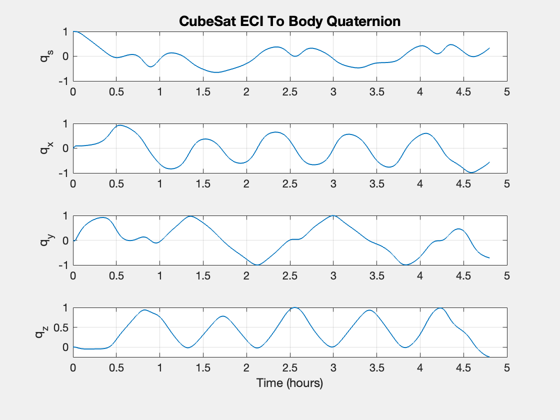 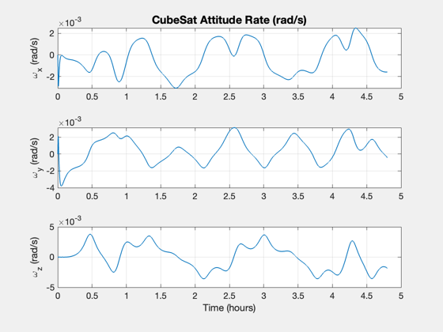 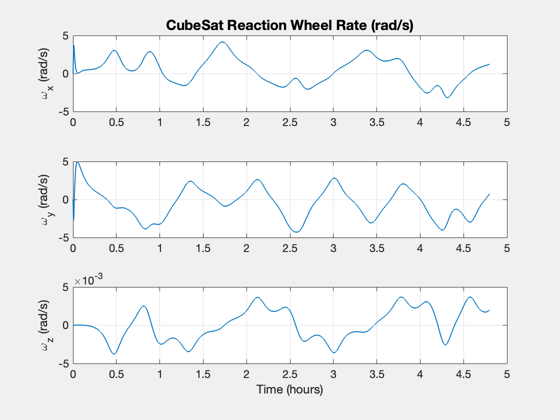 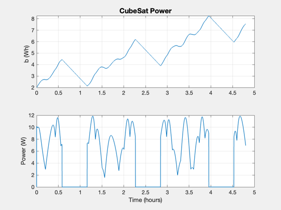 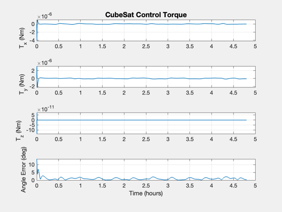 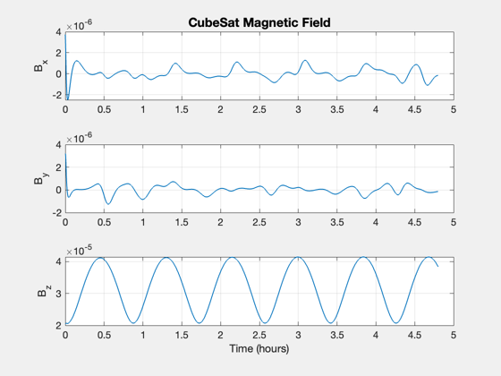 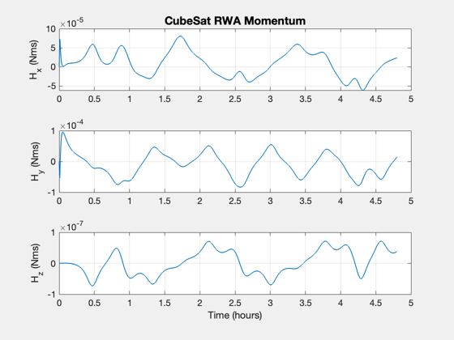
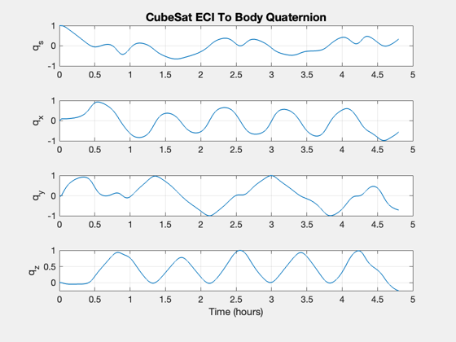 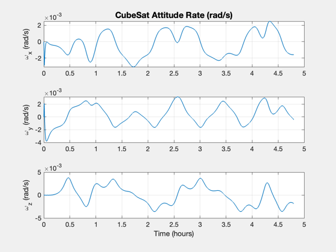 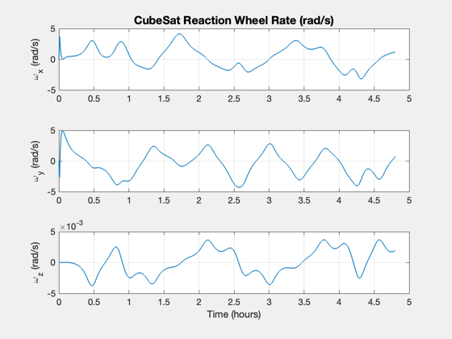 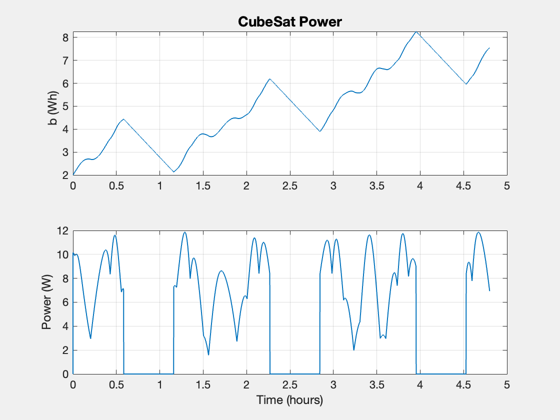 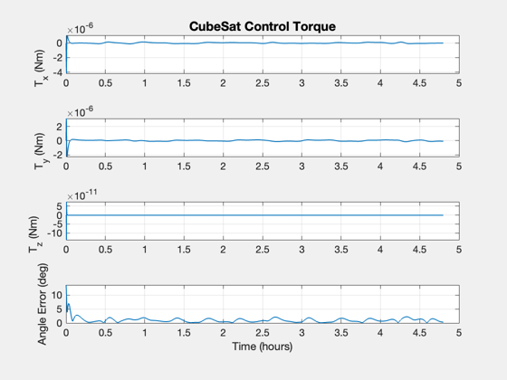 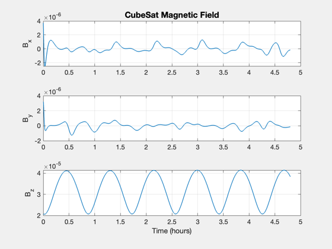 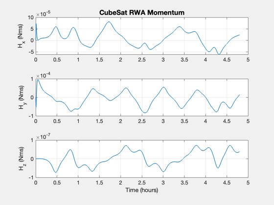 Create a table of output
%-------------------------- g{1,1} = 'Reaction Wheel Inertia'; g{1,2} = LatexScientificNotation( d.inertiaRWA, 1); g{1,3} = 'kg-m$^2$'; g{2,1} = 'Reaction Wheel Radius'; g{2,2} = sprintf('%8.4f',radius*1000); g{2,3} = 'mm'; g{3,1} = 'Reaction Wheel Thickness'; g{3,2} = sprintf('%8.4f',thickness*1000); g{3,3} = 'mm'; g{4,1} = 'Maximum RWA torque'; g{4,2} = LatexScientificNotation( maximumTorque, 4); g{4,3} = 'Nm'; g{5,1} = 'Maximum RWA Momentum'; g{5,2} = LatexScientificNotation( maximumMomentum, 4 ); g{5,3} = 'Nms'; g{6,1} = 'Maximum RWA Rate'; g{6,2} = sprintf('%12.4f',maximumSpeed*30/pi); g{6,3} = 'RPM'; g{7,1} = 'Solar Cell Efficiency'; g{7,2} = sprintf('%8.4f',d.power.solarCellEff); g{7,3} = ''; g{8,1} = 'Power Conversion Efficiency'; g{8,2} = sprintf('%8.4f',d.power.effPowerConversion); g{8,3} = ''; g{9,1} = 'Panel Area'; g{9,2} = sprintf('%8.4f',d.power.solarCellArea(1)*1e4); g{9,3} = 'cm$^2$'; g{10,1} = 'Average Power Consumption'; g{10,2} = sprintf('%8.1f',d.power.consumption ); g{10,3} = 'W'; g{11,1} = 'Battery Capacity'; g{11,2} = sprintf('%8.1f',d.power.batteryCapacity/3600); g{11,3} = 'Wh'; CreateTable( g );
Reaction Wheel Inertia - 1.9 $\times 10^{-5}$ - kg-m$^2$
Reaction Wheel Radius - 20.0000 - mm
Reaction Wheel Thickness - 4.0000 - mm
Maximum RWA torque - 4.1284 $\times 10^{-6}$ - Nm
Maximum RWA Momentum - 9.5802 $\times 10^{-5}$ - Nms
Maximum RWA Rate - 47.1507 - RPM
Solar Cell Efficiency - 0.2950 -
Power Conversion Efficiency - 0.9000 -
Panel Area - 116.0000 - cm$^2$
Average Power Consumption - 4.0 - W
Battery Capacity - 10.0 - Wh
Save data for the budgets
%-------------------------- u.rwa.mass = massRWA; u.rwa.volume = volRWA; u.solarPanel.mass = massSolarPanel; u.solarPanel.volume = volSolarPanel; SaveStructure(u,'BudgetData.mat'); %-------------------------------------- % $Id: cbae62b869b225905b20859e544f974d960acc57 $